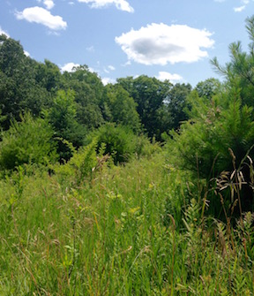
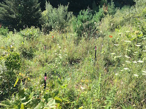
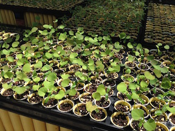

Research keywords
plant community ecology, species interactions, spatial simulations, meta-analysis, network ecology, Bayesian hierarchical modeling
Dissertation work
Characterizing plant communities as networks and combining network metrics across many communities using meta-analysis to make generalizations about community structure with a quantitative foundation.
Conducting large scale field and garden experiments in an old field woody plant community in order to compare community-level structure and interactions among invasive and native species using network theory.
Quantifying pairwise and three-species interactions among invasive and native woody plants in greenhouse experiments to determine whether pairwise interactions can predict three-species interactions.
Using large, stochastic spatial lattice simulations, invading plant communities to understand what aspects of community structure influence invasibility, as well as how invaders change community structure. These simulations are implemented using a parallelized C++ program that I co-wrote, ecolattice.
Other projects
Using meta-analysis to quantify evidence and to document patterns about well-known ecological phenomena: including the latitudinal diversity gradient and the correlation between native and exotic species richness at many spatial scales and extents.
Designing undergraduate biology course materials that are structured using the core concepts of AAAS Vision and Change Undergraduate Biology Education Initiative.
Implementing a population dynamic simulation, informed by bioenergetic models, that estimates the impacts of invasive carp on native paddlefish in the Mississippi River.
Assessing the potential risk of biological invasions on green roofs, including the risk of planted invasive plants spreading from green roofs as well as the risk of invasive plants dispersing to and establishing on green roofs.
Quantifying the diversity of macroinvertebrate communities in small ponds within a human-dominated urban/suburban matrix, in detention ponds as well as created and natural wetlands.



Images of my field site in the Yale Myers Forest in northeastern Connecticut, an old field with a patchy mixture of native and invasive shrubs, along with plenty of forbs and grasses (also featured: Berberis thunbergii seedlings in the greenhouse).